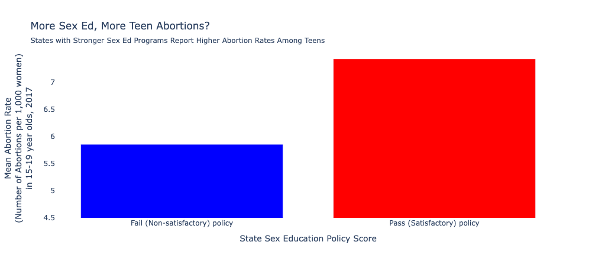
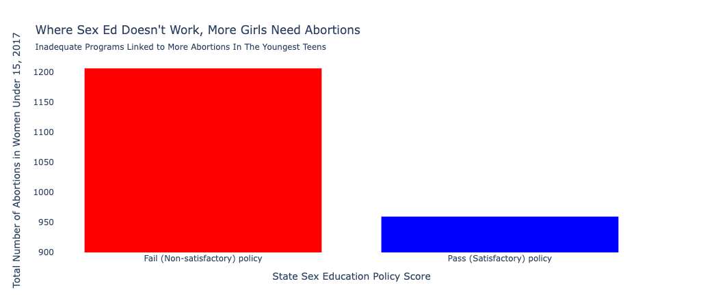

Proposition: Comprehensive Sex Education in Schools Leads to More Teen Abortions
Higher Quality Sex Education is Associated with A Higher Abortion Rate in 15-19 Year Olds

Design Decisions and Rationale:
-
Binning of Data
Deception Score: -1.5
The data binning method was the same for both visualizations. I was interested in depicting whether there was a relationship or association between abortion rate and sex education, but when I just looked at the data at the state level, I did not actually find a strong correlation between quality of sex education and any sort of abortion metric that was contained in the data. I had the idea to bin the data based on the “grade” that each state received for their quality of sex education (with the sex education data coming from seicus.org), with A, B, and C grades being “Pass” and D and F grades constituting a “Fail” in order to determine whether there were overall trends between what could be considered good and bad sex education, but binning the data removed some of the nuances of the original dataset. This decision to aggregate my data so that it was in two groups rather than 50 groups made it so that my visualization would be simpler (two bars instead of 50) and therefore likely easier to interpret and be persuaded. The design choice made it easier for me to persuade the reader because it separated states into pre-selected bins of “good” and “bad” quality of sex education that were already pre-determined for the reader.
-
Data Transformations
Deception Score: 1.5
After I grouped the data by Pass/Fail State Sex Education Policy Score, the aggregation function that I chose was the mean, so that I could find the mean abortion metrics included in the datasets and compare them between the Pass state group and the Fail state group. The use of the mean itself as an aggregation function or data transformation is not deceptive on its own, and it was used for this visualization because I wanted to compare abortion rates between the two groups. Because I wanted to compare rates, using an aggregation function like sum would not have made mathematical sense, and the large diversity of rates in the dataset would have made a measure of central tendency like mode also an ineffective aggregation method, so I settled on using the mean.
-
Y Axis Selection
Deception Score: -2
After doing all my data transformations (bringing in the sex education data, binning the states into the Pass and Fail groups, and taking the mean of each column in the dataset), I searched the data for an interesting relationship between one of the abortion rate metrics and the groups, and I found that in the states with a Sex Education Policy Score that was passing, the average abortion rate in 15–19 year olds was higher than in states with a Sex Education Policy Score that was failing. This was very interesting to me, as sex education is usually taught in high schools, and I wanted to focus my visualization on the teen abortion rate specifically, given that most teenagers are in high school (where they would be receiving sex education). Because I wanted to tell the story that more comprehensive sex education leads to more teen abortions, I chose a column that directly supported that proposition and ignored the other columns that suggested something different.
-
Y Axis Range
Deception Score: -2
The y-axis was deliberately altered in order to emphasize the difference between the two groups and make the difference between the two groups appear much larger than it actually is. The passing states only have an abortion rate of around 7.5 abortions per 1,000 women ages 15–19, compared to the failing states having a rate of around 6 abortions per 1,000 women aged 15–19, but the y axis starting at 4.5 abortions per 1,000 women aged 15–19 causes the passing states bar to be twice the size of the failing states bar, and implicitly signals to the reader that the passing states have an abortion rate twice that of the failing states, even though that is not true. The use of a y axis starting at 4.5 instead of 0 enabled the visualization to be more persuasive because it implies a relationship between the groups that is an exaggeration of the actual relationship between them, to the benefit of the proposition.
Higher Quality Sex Education is Associated With a Higher Number Abortions in Women Under 15

Design Decisions and Rationale:
-
Binning of Data
Deception Score: -1.5
The data binning method was the same for both visualizations. The data binning method was the same for both visualizations. I was interested in depicting whether there was a relationship or association between abortion metrics and sex education, but when I just looked at the data at the state level, I did not actually find a strong correlation between quality of sex education and any sort of abortion metric that was contained in the data. I had the idea to bin the data based on the “grade” that each state received for their quality of sex education (with the sex education data coming from seicus.org), with A, B, and C grades being “Pass” and D and F grades constituting a “Fail” in order to determine whether there were overall trends between what could be considered good and bad sex education, but binning the data removed some of the nuances of the original dataset. This decision to aggregate my data so that it was in two groups rather than 50 groups made it so that my visualization would be simpler (two bars instead of 50) and therefore likely easier to interpret and be persuaded. The design choice made it easier for me to persuade the reader because it separated states into pre-selected bins of “good” and “bad” quality of sex education that were already pre-determined for the reader.
-
Data Transformations
Deception Score: -1
After I binned my data into the two groups (Pass and Fail states for State Sex Education Policy Score), I chose to use sum as my aggregation function. I specifically chose sum because a sum of the absolute numbers in each group could have the potential to be deceptive. Similar to the idea that some chloropleth maps are a map of population density, population is a potential confounding variable when we take the sum of multiple states in each group. For example, one group having a higher number of total abortions performed on teens may simply be because there are more states or a larger population living in states that belong to that group, and do not reflect any association between sex education policy and teen abortion rate. This potential for deception is not present if aggregation functions such as mean or median were employed, as they measure central tendency and would reflect an average state in each group and not the sum total of each group of states. However, using sum as my aggregation function made it so that I was only able to compare absolute numbers and not rates between groups, as it does not make mathematical sense in this case to take the sum of rates in a group to create a group rate. This transformation makes my visualization more persuasive by allowing me to present data that may have a confounding variable present and use it to support the proposition.
-
Y Axis Selection
Deception Score: -2
The column that was plotted on the y axis was chosen deliberately, in conjunction with the aggregation method of data transformation. Because the aggregation method was chosen was sum, the only columns that could be compared were the columns recording the total number of abortions for each age group. The column of total number of abortions in women younger than 15 was chosen because it was the only column in this transformed data set that supported the proposition. In the other teenage age groups (15-17, 15-19), the total number of abortions in each group (Pass and Fail State Sex Education Policy Score) did not reflect the trend I intended to convey with this proposition, so they were deliberately not included in the visualization. The specific inclusion and exclusion of specific columns made the visualization more persuasive because it only showed a subset of data that supported the proposition and did not show data that did not support the proposition.
-
Y Axis Range
Additionally, the y axis range was also intentionally chosen and altered in order to over emphasize the difference between groups. The states with a grade of Pass have a total of approximately 950 abortions in women under 15 in 2017, and the states with a grade of Fail have a total of approximately 1,200 abortions performed in women under 15 in 2017, but the y axis begins at 900 abortions, which makes it so that the bar representing the states with a grade of Pass is several times smaller than the bar representing the states with a grade of Fail, and implies that the number of abortions in that the the Fail group is performing abortions at a rate many times higher than the Pass group, when the actual difference between the groups is around 250 abortions performed in women under 15 (and that is not a large a difference as the visualization implies). This made the visualization more effective by drawing attention to the differences in groups that supported the proportion.)
Final Reflection
Given the political context of the world right now, where sex education in high schools has always been a contentious issue and abortions rights have recently also become threatened, this project showed me how easy it is to manipulate data in order to make a visualization that blatantly (but subtly) supports one side of an issue or argument.
The most straightforward thing was determining what type of figure to create in this case, because I knew that I wanted to compare between categories, and to have some sort of single number to represent each category, so it was relatively straightforward to choose a bar chart over other figures. The hardest part was figuring out which proposition I wanted to do, as I was interested in connecting abortion data to sex education data, but I was not sure of the exact route I wanted to take with that, which influenced my choice of what type of sex education data to bring in.
My process was to initially bring in the sex education data, which I sourced from the state profiles at seicus.org. The data gives a letter grade for each state based on the quality of their policy surrounding sex education. I transcribed this into my dataframe and then separated the data by state into the states with passing grades (A, B, C) and failing grades (D, F) for their overall score regarding their sex education policy. From there, I aggregated the data by either mean or sum, and plotted a bar plot to compare between the groups, with some design choices to make sure that the differences between the groups were eye catching and exaggerated in order to make my visualization more deceptive and more persuasive on initial glance.
Overall, my design process was focused on reducing the granularity of the data in order to create visualization that was easy to read, understand, and interpret, but also to use deceptive techniques that would allow the reader to be persuaded by either side of the proposition. I intentionally kept the design and data transformation for each graph nearly intentional in order to showcase how small changes in the way that the data was analyzed and plotted can lead to graphs that suggest wildly different (and in this case, opposite) things. I chose the same visual representation deliberately, to show that the same data set can result in two graphs of completely different meaning and intent, and I was surprised that such a small change in analysis technique could result in visualizations that told opposite stories.
I think I would define ethical visualization as visualization that gives enough data for the reader to come to their own conclusion regarding the data. I think that deliberate inclusion and exclusion of data is something that can be deceptive, but is also something that is necessary in all visualizations because we cannot visualize all data all the time. However, I do think manipulations such as changing the range of the X and Y axis is not ethical data analysis and visualization because it implies a relationship that is likely not present in the data and is deliberately misleading. While elements such as color and opacity can also be used to make visualizations more persuasive and to tell a story, they are not characteristically deceptive or misleading, unlike manipulations like changing the range of the X and Y axis.